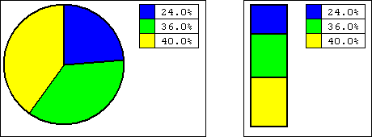
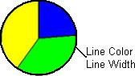
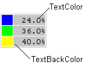

|
|
|
|
|
|
|
|
A statistical pie graph displays multiple variable values as a percentage (%) of the display range. You can display up to 8 channels with variable data, corresponding to the sections shown in the graph.

Color |
Property |
Value Stored in Variable |
Percentage |
|
Ch1:Variable |
30 |
24.0 |
|
Ch2:Variable |
45 |
36.0 |
|
Ch3:Variable |
50 |
40.0 |
Property |
Description |
|
Name |
The statistical pie graph object's name. Whenever an object is created, a default name is generated. When renaming an object, its name must be unique within the target, must contain no more than 32 valid characters, and must follow the naming conventions. For details, see Appendix 9, Naming Conventions. |
|
Description |
This property is read-only. It displays the name of the part and in which version of Vijeo-Designer it was created. |
|
Version |
This property is read only and displays the editor version that created the part. |
|
Top |
The coordinates, in pixels, of the top-left corner of the object.
By changing these properties, the graphical object can be moved up, down, left, and right.
|
|
Left |
||
Width |
The width/height of the object in pixels. Enter a value between 4 and 3000. |
|
Height |
||
BackColor |
Select the background color of the graph. |
|
LineColor |
Select the color and thickness of the line that appears around the pie graph and between the graph segments. Specify a value between 1 and 9 pixels.  |
|
LineWidth |
||
TextColor |
This property will display only if you choose the pie graph with text. Select the color of the text and its background. The position and size of the text is fixed.  |
|
TextBackColor |
||
NumberOfChannels |
Select the number of variables to display in the pie graph. You can graph up to 8 variables. |
|
ch*:Variable (* is the specified channel number, from 1 to 8). |
Select the integer variable to display in the pie graph. |
|
ch*:ForeColor |
Select the foreground color of the Ch*. |
|
ch*:Pattern |
Select the pattern of the Ch*. |
|
RestoreDefaults |
Click the Restore Defaults button to display the confirmation message. Clicking OK will restore all values to the default settings. |
|
Placeholder |
You can assign a placeholder in any property that requires a variable definition. Click the ellipsis to open the Placeholders dialog box and edit the variable placeholder for the object. The dialog box only displays if you had set up a placeholder for the object. For more information on placeholders, see Section 21.2.4, Working with Variable Placeholders. |
|